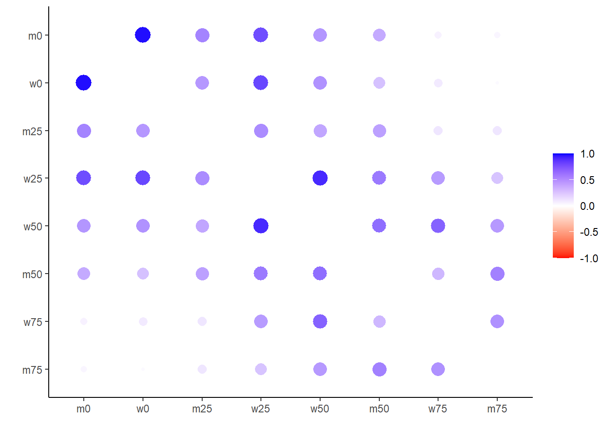
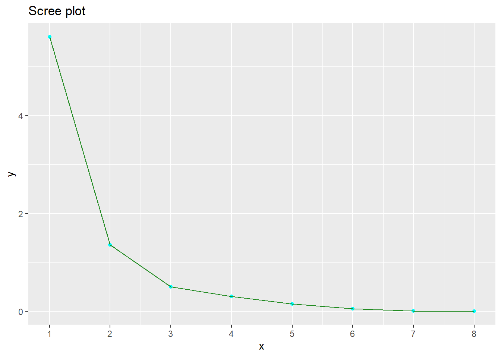
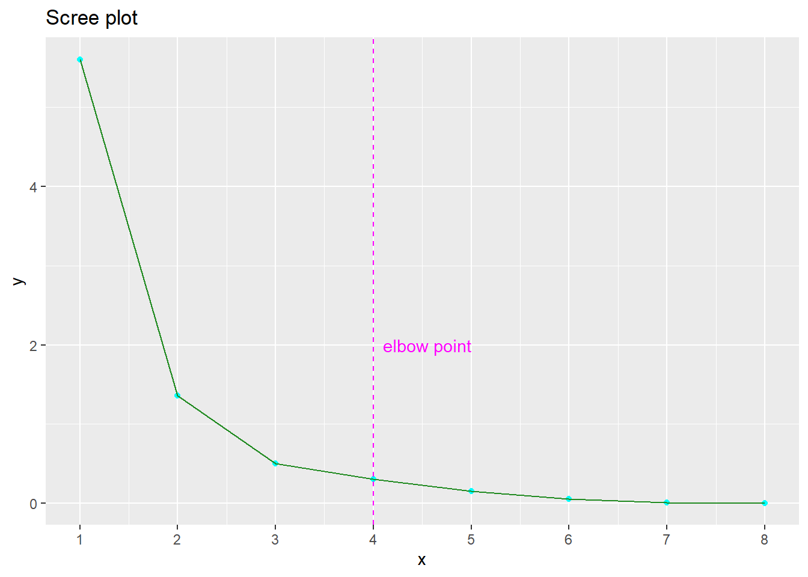
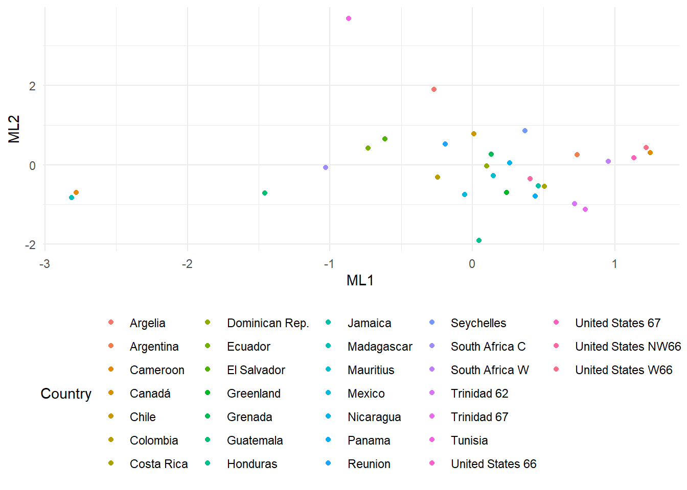

library(tidyverse)
library(corrr)
library(psych)
library(lavaan)
library(kableExtra)
library(readxl)Análisis Factorial
R
Multivariado
Concepto
El análisis factorial (FA) es un método estadístico que se utiliza para buscar algunas variables no observadas (latentes) llamadas factores a partir de variables observadas.
El análisis factorial se utiliza para analizar las relaciones entre una gran cantidad de variables observadas y para identificar una cantidad menor de variables subyacentes no observadas, que se denominan factores. El objetivo del análisis factorial es reducir la complejidad de un conjunto de datos e identificar la estructura subyacente que explica los datos observados.
Al reducir el número de variables en el modelo, el análisis factorial puede ayudar a superar problemas de sobreajuste, multicolinealidad y alta dimensionalidad.
El sobreajuste ocurre cuando un modelo es demasiado complejo y se ajusta demasiado a los datos de entrenamiento, lo que puede provocar un rendimiento deficiente con datos nuevos.
La multicolinealidad ocurre cuando dos o más variables están altamente correlacionadas entre sí, lo que puede conducir a estimaciones inestables y poco confiables de los coeficientes del modelo.
La alta dimensionalidad ocurre cuando hay demasiadas variables en el modelo, lo que puede conducir a una ineficiencia computacional y una interpretación reducida del modelo.
Existen dos tipos de AF, llamados análisis factorial exploratorio y confirmatorio (EFA y CFA). Tanto EFA como CFA tienen como objetivo reproducir las relaciones observadas entre un grupo de características con un conjunto más pequeño de variables latentes. La EFA se utiliza de manera descriptiva y basada en datos para descubrir qué variables medidas son indicadores razonables de las diversas dimensiones latentes. Por el contrario, el AFC se lleva a cabo de una manera a priori, de prueba de hipótesis que requiere sólidos fundamentos empíricos o teóricos. Aquí nos centraremos principalmente en EFA, que se utiliza para agrupar características en un número específico de factores latentes.
Ventajas
FA es una forma útil de combinar diferentes grupos de datos en factores representativos conocidos, reduciendo así la dimensionalidad de un conjunto de datos.
FA puede tener en cuenta el conocimiento experto de los investigadores al elegir la cantidad de factores a utilizar y puede usarse para identificar variables latentes u ocultas que pueden no ser evidentes al utilizar otros métodos de análisis.
Es fácil de implementar con muchas herramientas de software disponibles para realizar FA. La FA confirmatoria se puede utilizar para probar hipótesis.
Desventajas
Justificar la elección del número de factores a utilizar puede resultar difícil si se sabe poco sobre la estructura de los datos antes de realizar el análisis.
A veces, puede resultar difícil interpretar qué significan los factores una vez completado el análisis.
Al igual que PCA, los métodos estándar para realizar FA suponen que las variables de entrada son continuas, aunque las extensiones de FA permiten incluir variables ordinales y binarias (después de transformar la matriz de entrada).
Ejemplo Aplicativo: Life Expectancy
Se ha utilizado una base de datos “Life Expectancy” obtenido del libro “An Introduction to Applied Multivariate Analysis with R”, página 148.
Flujo de trabajo en R
El conjunto de datos sobre esperanza de vida contiene 31 observaciones de países.
LifEx<-read_xlsx("datos/datalife.xlsx")
LifEx |>
kbl() |>
kable_styling(full_width = FALSE)| Country | m0 | m25 | m50 | m75 | w0 | w25 | w50 | w75 |
|---|---|---|---|---|---|---|---|---|
| Argelia | 63 | 51 | 30 | 13 | 67 | 54 | 34 | 15 |
| Cameroon | 34 | 29 | 13 | 5 | 38 | 32 | 17 | 6 |
| Madagascar | 38 | 30 | 17 | 7 | 38 | 34 | 20 | 7 |
| Mauritius | 59 | 42 | 20 | 6 | 64 | 46 | 25 | 8 |
| Reunion | 56 | 38 | 18 | 7 | 62 | 46 | 25 | 10 |
| Seychelles | 62 | 44 | 24 | 7 | 69 | 50 | 28 | 14 |
| South Africa C | 50 | 39 | 20 | 7 | 55 | 43 | 23 | 8 |
| South Africa W | 65 | 44 | 22 | 7 | 72 | 50 | 27 | 9 |
| Tunisia | 56 | 46 | 24 | 11 | 63 | 54 | 33 | 19 |
| Canadá | 69 | 47 | 24 | 8 | 75 | 53 | 29 | 10 |
| Costa Rica | 65 | 48 | 26 | 9 | 68 | 50 | 27 | 10 |
| Dominican Rep. | 64 | 50 | 28 | 11 | 66 | 51 | 29 | 11 |
| El Salvador | 56 | 44 | 25 | 10 | 61 | 48 | 27 | 12 |
| Greenland | 60 | 44 | 22 | 6 | 65 | 45 | 25 | 9 |
| Grenada | 61 | 45 | 22 | 8 | 65 | 49 | 27 | 10 |
| Guatemala | 49 | 40 | 22 | 9 | 51 | 41 | 23 | 8 |
| Honduras | 59 | 42 | 22 | 6 | 61 | 43 | 22 | 7 |
| Jamaica | 63 | 44 | 23 | 8 | 67 | 48 | 26 | 9 |
| Mexico | 59 | 44 | 24 | 8 | 63 | 46 | 25 | 8 |
| Nicaragua | 65 | 48 | 28 | 14 | 68 | 51 | 29 | 13 |
| Panama | 65 | 48 | 26 | 9 | 67 | 49 | 27 | 10 |
| Trinidad 62 | 64 | 63 | 21 | 7 | 68 | 47 | 25 | 9 |
| Trinidad 67 | 64 | 43 | 21 | 6 | 68 | 47 | 24 | 8 |
| United States 66 | 67 | 45 | 23 | 8 | 74 | 51 | 28 | 10 |
| United States NW66 | 61 | 40 | 21 | 10 | 67 | 46 | 25 | 11 |
| United States W66 | 68 | 46 | 23 | 8 | 75 | 52 | 29 | 10 |
| United States 67 | 67 | 45 | 23 | 8 | 74 | 51 | 28 | 10 |
| Argentina | 65 | 46 | 24 | 9 | 71 | 51 | 28 | 10 |
| Chile | 59 | 43 | 23 | 10 | 66 | 49 | 27 | 12 |
| Colombia | 58 | 44 | 24 | 9 | 62 | 47 | 25 | 10 |
| Ecuador | 57 | 46 | 28 | 9 | 60 | 49 | 28 | 11 |
Explorando la matriz de correlación
El insumo del análisis factorial es la matriz de correlación y, para algunos índices, el número de observaciones. Podemos explorar correlaciones con el paquete corrr:
cor_tb <- correlate(LifEx[,-1])Correlation computed with
• Method: 'pearson'
• Missing treated using: 'pairwise.complete.obs'corrr::rearrange agrupa variables altamente correlacionadas más juntas, y corrr::rplot visualiza el resultado (se ha usado una escala de color personalizada para resaltar los resultados):
cor_tb |>
rearrange() |>
rplot(colors = c("red", "white", "blue"))
Se muestran 4 grupos, en torno a las variables:
m0 y w0 (primer grupo).
m25 y w25 (segundo grupo).
m50 y w50 (tercer grupo).
m75 y w75 (cuarto grupo).
Comencemos el flujo de trabajo del análisis factorial. Para ello necesitamos obtener las correlaciones en formato matricial con la función cor base R.
cor_mat <- cor(LifEx[,-1])Pruebas preliminares
En el análisis preliminar, examinamos si la matriz de correlación es adecuada para el análisis factorial. Tenemos dos métodos disponibles:
La prueba de adecuación de la muestra de Kaiser-Meyer-Olkin (KMO). Según Kaiser (1974), los valores de KMO > 0,9 son maravillosos, en 0,80, meritorios, en 0,70, mediocres, en 0,60, mediocres, en 0,50, miserables y por debajo de 0,5, inaceptables. Ese índice lo podemos obtener con
psych::KMO. También proporciona una medida de adecuación de la muestra para cada variable.La prueba de esfericidad de Bartlett. Es una prueba de la hipótesis de que la matriz de correlación es una matriz de identidad. Si se puede rechazar esta hipótesis nula, podemos suponer que las variables están correlacionadas y luego realizar un análisis factorial. Podemos hacer esta prueba con la función
psych::cortest.bartlett.
Los resultados de la prueba KMO son:
KMO(cor_mat)Kaiser-Meyer-Olkin factor adequacy
Call: KMO(r = cor_mat)
Overall MSA = 0.79
MSA for each item =
m0 m25 m50 m75 w0 w25 w50 w75
0.69 0.90 0.78 0.86 0.68 0.84 0.86 0.83 Estos resultados pueden considerarse mediocres.
Los resultados de la prueba de Bartlett son:
cortest.bartlett(R = cor_mat, n = 31)$chisq
[1] 372.3232
$p.value
[1] 7.881036e-62
$df
[1] 28Estos resultados proporcionan una fuerte evidencia de que las variables están correlacionadas.
Número de factores a extraer
Un punto de partida para decidir cuántos factores extraer es examinar los valores propios de la matriz de correlación.
eigen(cor_mat)$values[1] 5.602410288 1.358181546 0.499327002 0.308125898 0.154689625 0.058633785
[7] 0.012821625 0.005810232Se utilizan dos criterios para decidir el número de factores a extraer:
Elija tantos factores como valores propios sean mayores que uno.
Examine el punto del codo del diagrama de pedregal. En ese gráfico tenemos el rango de los factores en el eje x y los valores propios en el eje y.
Hagamos el diagrama de pedregal para ver el punto del codo.
n <- dim(cor_mat)[1]
scree_tb <- tibble(x = 1:n,
y = sort(eigen(cor_mat)$value, decreasing = TRUE))
scree_plot <- scree_tb |>
ggplot(aes(x, y)) +
geom_point(color = "cyan") +
geom_line(color = "ForestGreen") +
scale_x_continuous(breaks = 1:n) +
ggtitle("Scree plot")
scree_plot
scree_plot +
geom_vline(xintercept = 4, color = "magenta", linetype = "dashed") +
annotate("text", 4.1, 2, label = "elbow point", color = "magenta", hjust = 0)
Observamos que el método del codo ocurre con cuatro factores y que tenemos tres factores con valor propio mayor que uno. Se ha optado por obtener una solución de tres factores.
Cargas factoriales y rotaciones
Cargas factoriales \(f_{ij}\) están definidos para cada variable \(i\) y factor \(j\), y representan la correlación entre ambos. Un alto valor de \(f_{ij}\) significa que una gran cantidad de variabilidad de la variable \(i\) puede explicarse por el factor \(j\).
Las cargas factoriales de un modelo son únicas hasta una rotación. Preferimos métodos de rotación que obtienen cargas factoriales que permiten relacionar un factor con cada variable. Las rotaciones ortogonales producen un conjunto de factores no correlacionados. Los métodos de rotación ortogonal más comunes son:
Varimax maximiza la varianza de las cargas al cuadrado en cada factor, de modo que cada factor tenga solo unas pocas variables con grandes cargas por factor.
Quartimax minimiza la cantidad de factores necesarios para explicar una variable.
Equamax es una combinación de varimax y quartimax.
Las rotaciones oblicuas conducen a un conjunto de factores correlacionados. Los métodos de rotación oblicua más comunes son oblimin y promax.
En psych::fa, el tipo de rotación se pasa con el parámetro de rotación.
Para un análisis factorial, podemos dividir la varianza de cada variable en:
Comunalidad h2: la proporción de la varianza explicada por factores.
Unicidad u2: la proporción de la varianza no explicada por factores, por lo tanto única para la variable.
Interpretación de los resultados
Podemos realizar el análisis factorial utilizando la psych::fa función. Esta función permite varios métodos para realizar el análisis factorial especificando fmel parámetro. Las principales opciones disponibles son:
fm = “minres” para la solución residual mínima (el valor predeterminado).
fm = “ml” para la solución de máxima verosimilitud.
fm = “pa” para la solución del eje principal.
Hagamos el análisis factorial utilizando el método del eje principal y la rotación varimax. Los otros parámetros son la matriz de correlación y el número de factores nfactors = 3.
LifEx_factor <- fa(r = cor_mat, nfactors = 3, fm = "ml", rotate = "varimax")El resultado del análisis factorial realizado anteriormente es:
LifEx_factorFactor Analysis using method = ml
Call: fa(r = cor_mat, nfactors = 3, rotate = "varimax", fm = "ml")
Standardized loadings (pattern matrix) based upon correlation matrix
ML1 ML2 ML3 h2 u2 com
m0 0.96 0.12 0.23 1.00 0.0048 1.1
m25 0.65 0.17 0.44 0.64 0.3617 1.9
m50 0.43 0.35 0.79 0.93 0.0663 2.0
m75 0.08 0.52 0.66 0.71 0.2877 1.9
w0 0.97 0.22 0.08 1.00 0.0049 1.1
w25 0.76 0.56 0.31 0.99 0.0111 2.2
w50 0.54 0.73 0.40 0.98 0.0201 2.5
w75 0.16 0.87 0.28 0.85 0.1460 1.3
ML1 ML2 ML3
SS loadings 3.37 2.08 1.64
Proportion Var 0.42 0.26 0.21
Cumulative Var 0.42 0.68 0.89
Proportion Explained 0.48 0.29 0.23
Cumulative Proportion 0.48 0.77 1.00
Mean item complexity = 1.8
Test of the hypothesis that 3 factors are sufficient.
df null model = 28 with the objective function = 14.05
df of the model are 7 and the objective function was 0.27
The root mean square of the residuals (RMSR) is 0.01
The df corrected root mean square of the residuals is 0.03
Fit based upon off diagonal values = 1
Measures of factor score adequacy
ML1 ML2 ML3
Correlation of (regression) scores with factors 1.00 0.98 0.95
Multiple R square of scores with factors 1.00 0.95 0.91
Minimum correlation of possible factor scores 0.99 0.91 0.82Hay mucha información aquí. Veamos algunas ideas relevantes:
La solución comienza con las cargas factoriales para los factores ML1, ML3 y ML2. Las cargas factoriales son los únicos valores afectados por la rotación. Para cada variable obtenemos las comunalidades h2 y unicidades u2.
Las comunidades son bastante heterogéneas, oscilando entre 0,96 para m0 y 0,76 para w25.
La proporción de varianza explicada por cada factor se presenta en Proportion Var y la varianza acumulada en Cumulative Var. De la Var acumulativa aprendemos que el modelo explica el 54% de la varianza total. Este valor se considera bajo para un análisis factorial exploratorio.
Podemos ver mejor el patrón de cargas factoriales imprimiéndolas con un valor de corte:
print(LifEx_factor$loadings, cutoff = 0.3)
Loadings:
ML1 ML2 ML3
m0 0.964
m25 0.646 0.438
m50 0.430 0.354 0.790
m75 0.525 0.656
w0 0.970
w25 0.764 0.556 0.310
w50 0.536 0.729 0.401
w75 0.867
ML1 ML2 ML3
SS loadings 3.375 2.082 1.640
Proportion Var 0.422 0.260 0.205
Cumulative Var 0.422 0.682 0.887Podemos ver que podemos agrupar las variables m0 a m50 y w0 a w50 en un factor ML1, las variables m50, m75 y w25 a w75 en el factor ML2 y las variables m25 a m75 en el factor ML3. Para este conjunto de datos, este resultado está en correspondencia con el significado de las variables. ML1 estaría relacionado con la capacidad visual, ML3 con la capacidad verbal y ML2 con la capacidad matemática.
Puntuaciones de los factores
Mientras que las cargas factoriales ayudan a interpretar el significado de los factores, las puntuaciones factoriales permiten obtener valores de los factores para cada observación. Los argumentos de psych::factor.scores son las observaciones para las que queremos calcular las puntuaciones y el modelo de análisis factorial:
LifEx_scores <- factor.scores(LifEx |> select(m0:w75), LifEx_factor)El resultado de factor.scores es una lista con matrices:
puntuacionescon los valores de las puntuaciones de los factores para cada observación.ponderacionescon las ponderaciones utilizadas para obtener las puntuaciones.r.scores, la matriz de correlación de las puntuaciones.
Veamos cómo se ven las puntuaciones de los factores:
LifEx_scores$scores |>
as_tibble() |>
slice(1:5) |>
kbl() |>
kable_styling(full_width = FALSE)| ML1 | ML2 | ML3 |
|---|---|---|
| -0.2698331 | 1.9021552 | 1.9665810 |
| -2.7806603 | -0.6926360 | -1.9102875 |
| -2.8120358 | -0.8260575 | 0.0178951 |
| 0.1453850 | -0.2773256 | -0.8947034 |
| -0.1912897 | 0.5225114 | -1.6371799 |
Hagamos un diagrama de dispersión de los factores ML1 y ML3, destacando el país de cada observación.
scores <- as_tibble(LifEx_scores$scores)
LifEx$sexM <-LifEx[2:5]
LifEx$sexW <-LifEx[6:9]
LifEx$sex <-LifEx[10:11]
scores <- bind_cols(LifEx |> select(Country, sexM,sexW), scores)
scores |>
ggplot(aes(ML1, ML2, color = Country)) +
geom_point() +
theme_minimal() +
theme(legend.position = "bottom")
El gráfico muestra dos factores no correlacionados, distribuidos uniformemente entre los países.